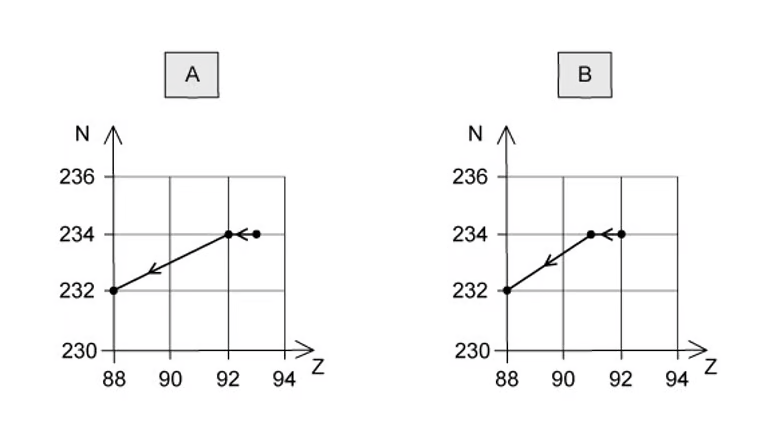
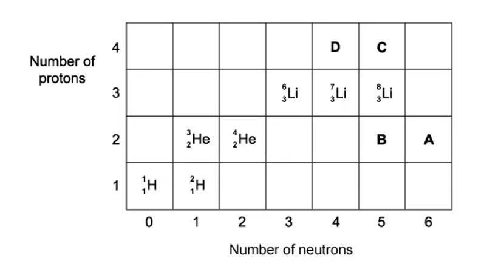
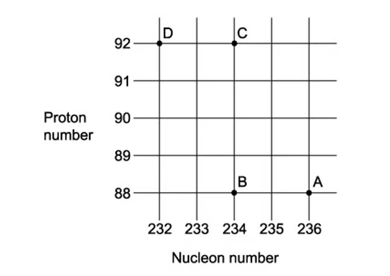
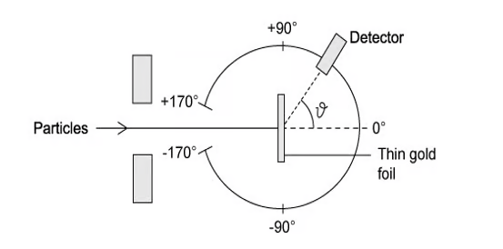
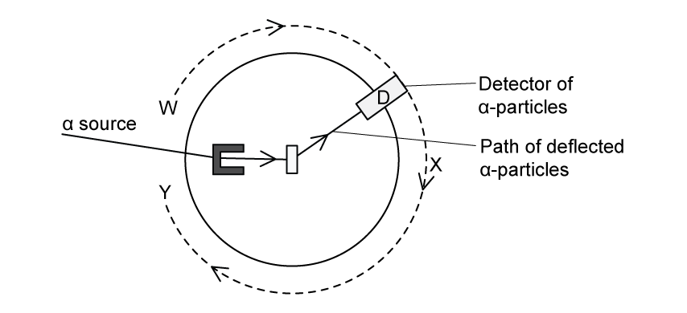
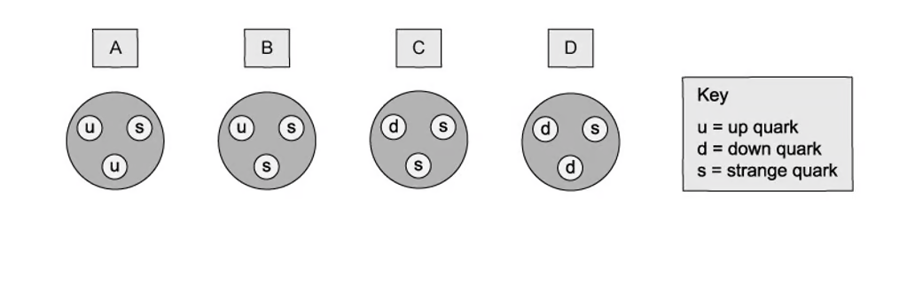

11 Particle Physics
Atoms, nuclei and radiation; fundamental particles
Learning objectives
By the end of this chapter, you should be able to:
- understand the structure of the atom and the nucleus;
- describe the properties of α, β and γ radiation;
- understand nuclear decay equations and the spontaneous nature of radioactive decay;
- calculate the number of atoms in a sample using the mole concept;
- describe the Geiger–Marsden (gold foil) experiment and its conclusions;
- understand the concept of isotopes and calculate binding energy;
- recall and use the quark model: up, down, strange quarks and their antiquarks;
- understand the classification of hadrons (baryons and mesons) and leptons;
- describe β⁻ and β⁺ decay in terms of quark changes;
- understand the conservation laws in particle interactions (charge, baryon number, lepton number).
11.1 Atoms, nuclei and radiation
The nucleus
The nucleus contains protons and neutrons (collectively called nucleons).
- Proton number (atomic number) Z — the number of protons in the nucleus.
- Nucleon number (mass number) A — the total number of protons and neutrons.
- Neutron number N = \(A - Z\).
A nuclide is represented as:
\[{}^{A}_{Z}\text{X}\]
Isotopes are nuclei of the same element with the same number of protons but different numbers of neutrons.
The size of a nucleus is of the order \(10^{-15}\) m (1 fm). Nuclear density is approximately \(10^{17}\) kg m\(^{-3}\).
The atomic mass unit
The atomic mass unit (u) is defined as one-twelfth of the mass of a carbon-12 atom:
\[1\ \text{u} = 1.66 \times 10^{-27}\ \text{kg}\]
The mass of a nucleus in u is approximately equal to its nucleon number A.
The Geiger–Marsden (gold foil) experiment
α-particles were directed at a thin gold foil (≈ \(10^{-6}\) m thick). The observations were:
- Most α-particles passed straight through → the atom is mostly empty space.
- Some were deflected through small angles → the nucleus has a positive charge.
- About 1 in 20 000 were deflected through more than 90° (or bounced back) → the nucleus is very small, dense and positively charged.
These results led to the nuclear model of the atom: a small, dense, positively charged nucleus surrounded by orbiting electrons.
Types of nuclear radiation
| Property | α-particle | β⁻-particle | γ-ray |
|---|---|---|---|
| Nature | Helium nucleus \({}^{4}_{2}\text{He}\) | Fast electron \({}^{0}_{-1}\text{e}\) | Electromagnetic wave |
| Charge | +2e | −e | 0 |
| Mass | 4 u | ≈ 0 | 0 |
| Speed | ≈ \(10^6\)–\(10^7\) m s\(^{-1}\) | ≈ \(10^8\) m s\(^{-1}\) | \(3 \times 10^8\) m s\(^{-1}\) |
| Ionising power | High | Medium | Low |
| Penetrating power | Stopped by paper / few cm of air | Stopped by a few mm of aluminium | Reduced by thick lead / concrete |
α-decay: \({}^{A}_{Z}\text{X} \rightarrow {}^{A-4}_{Z-2}\text{Y} + {}^{4}_{2}\alpha\)
β⁻-decay: \({}^{A}_{Z}\text{X} \rightarrow {}^{A}_{Z+1}\text{Y} + {}^{0}_{-1}\beta + \bar{\nu}_\text{e}\)
β⁺-decay: \({}^{A}_{Z}\text{X} \rightarrow {}^{A}_{Z-1}\text{Y} + {}^{0}_{+1}\beta + \nu_\text{e}\)
γ-emission: \({}^{A}_{Z}\text{X}^* \rightarrow {}^{A}_{Z}\text{X} + \gamma\) (no change in Z or A)
Nuclear fission
Nuclear fission is the splitting of a large nucleus into two smaller nuclei (fission fragments), with the release of energy and neutrons.
Example:
\[{}^{235}_{92}\text{U} + {}^{1}_{0}\text{n} \rightarrow {}^{90}_{38}\text{Sr} + {}^{144}_{54}\text{Xe} + 2\,{}^{1}_{0}\text{n}\]
Conservation laws in fission: - Mass–energy is conserved (mass defect → energy release) - Momentum is conserved - Charge is conserved (Z numbers balance) - Nucleon number is conserved (A numbers balance)
11.2 Fundamental particles
Classification of particles
Hadrons are particles made of quarks. They are divided into: - Baryons — made of three quarks (e.g. proton, neutron) - Mesons — made of a quark and an anti-quark (e.g. pion, kaon)
Leptons are fundamental (elementary) particles that are not made of quarks. Examples: electron, muon, neutrino.
Fundamental particles (also called elementary particles) are particles that cannot be broken down further into constituent parts.
The quark model
Quarks are fundamental particles that combine to form hadrons.
| Quark | Symbol | Charge |
|---|---|---|
| Up | \(u\) | \(+\frac{2}{3}e\) |
| Down | \(d\) | \(-\frac{1}{3}e\) |
| Strange | \(s\) | \(-\frac{1}{3}e\) |
| Charm | \(c\) | \(+\frac{2}{3}e\) |
| Top | \(t\) | \(+\frac{2}{3}e\) |
| Bottom | \(b\) | \(-\frac{1}{3}e\) |
Each quark has a corresponding anti-quark with opposite charge (e.g. \(\bar{u}\) has charge \(-\frac{2}{3}e\)).
Baryon composition: - Proton (\(p\)) = \(uud\) (charge \(+\frac{2}{3}+\frac{2}{3}-\frac{1}{3} = +1e\)) - Neutron (\(n\)) = \(udd\) (charge \(+\frac{2}{3}-\frac{1}{3}-\frac{1}{3} = 0\))
Meson composition: - \(\pi^+\) = \(u\bar{d}\) (charge \(+\frac{2}{3}+\frac{1}{3} = +1e\)) - \(\pi^-\) = \(\bar{u}d\) (charge \(-\frac{2}{3}-\frac{1}{3} = -1e\)) - \(\pi^0\) = \(u\bar{u}\) or \(d\bar{d}\) (charge 0)
Beta decay in the quark model
β⁻-decay: A neutron changes into a proton:
\[n \rightarrow p + e^- + \bar{\nu}_\text{e}\]
In terms of quarks: a down quark changes to an up quark:
\[d \rightarrow u + e^- + \bar{\nu}_\text{e}\]
(udd) → (uud) + e⁻ + \(\bar{\nu}_\text{e}\)
β⁺-decay: A proton changes into a neutron:
\[p \rightarrow n + e^+ + \nu_\text{e}\]
In terms of quarks: an up quark changes to a down quark:
\[u \rightarrow d + e^+ + \nu_\text{e}\]
(uud) → (udd) + e⁺ + \(\nu_\text{e}\)
Conservation laws in particle physics
| Quantity | Conserved? |
|---|---|
| Charge | ✓ |
| Baryon number | ✓ |
| Lepton number | ✓ |
| Energy (mass–energy) | ✓ |
| Momentum | ✓ |
| Strangeness (in strong interaction) | ✓ |
Antimatter: Each particle has an antiparticle with the same mass but opposite charge. When a particle meets its antiparticle, they annihilate to produce energy (usually γ-rays).
Multiple Choice Questions
11.1 Atoms, Nuclei & Radiation - Easy
Example 1 · 11.1 MC Easy Q1
Which of the following lists the three types of nuclear radiation in order of increasing ionising power?
A. α, β, γ
B. β, γ, α
C. γ, α, β
D. γ, β, α
Show answer and explanation
Answer: D. γ has the lowest ionising power, β has medium ionising power, and α has the highest ionising power. This is because α-particles are the most massive and slowest, so they interact more strongly with atoms along their path.Example 2 · 11.1 MC Easy Q2
In β⁻ decay, what happens to the nucleon number of the nucleus?
A. It decreases by 1
B. It stays the same
C. It increases by 1
D. It decreases by 4
Show answer and explanation
Answer: B. In β⁻ decay, a neutron decays to become a proton, an electron (β⁻ particle) and an antineutrino. The mass number is unchanged because the total number of nucleons remains the same. The proton number increases by one.Example 3 · 11.1 MC Easy Q3
In the Geiger–Marsden (gold foil) experiment, what was the observation that led to the conclusion that the atom is mostly empty space?
A. Most α-particles were deflected through large angles
B. All α-particles were absorbed by the foil
C. Most α-particles passed straight through the foil
D. Most α-particles were reflected by the foil
Show answer and explanation
Answer: C. The fact that most α-particles passed straight through the foil with little or no deflection indicated that the atom consists mostly of empty space. The small, dense nucleus was only occasionally encountered, causing the rare large-angle deflections.Example 4 · 11.1 MC Easy Q4
When a nucleus of aluminium-27 is bombarded with α-particles, the following reaction occurs:
\[{}^{27}_{13}\text{Al} + {}^{4}_{2}\alpha \rightarrow {}^{30}_{15}\text{P} + \text{X}\]
What is particle X?
A. A neutron
B. A proton
C. An electron
D. A γ-ray photon
Show answer and explanation
Answer: A. Balancing the equation: left side has nucleon number 27 + 4 = 31, right side has 30 + A, so A = 1. Left side has proton number 13 + 2 = 15, right side has 15 + Z, so Z = 0. Therefore X is a neutron \({}^{1}_{0}\text{n}\).Example 5 · 11.1 MC Easy Q5
A nucleus of caesium-133 (\({}^{133}_{55}\text{Cs}\)) contains how many protons, neutrons and electrons in the neutral atom?
A. 55 protons, 78 neutrons, 55 electrons
B. 55 protons, 133 neutrons, 55 electrons
C. 78 protons, 55 neutrons, 78 electrons
D. 133 protons, 55 neutrons, 133 electrons
Show answer and explanation
Answer: A. The symbol \({}^{133}_{55}\text{Cs}\) gives the nucleon number A = 133 and the proton number Z = 55. So there are 55 protons. The number of neutrons = A − Z = 133 − 55 = 78. In a neutral atom, the number of electrons equals the number of protons = 55.Example 6 · 11.1 MC Easy Q6
Which of the following is a correct property of an α-particle?
A. It has a charge of −e
B. It is a helium nucleus with charge +2e
C. It has a typical speed of \(3 \times 10^8\) m s\(^{-1}\)
D. It has the lowest ionising power of the three types of radiation
Show answer and explanation
Answer: B. An α-particle is a helium nucleus consisting of two protons and two neutrons, giving it a charge of +2e. Its typical speed is \(10^6\)–\(10^7\) m s\(^{-1}\) (not the speed of light), and it has the highest ionising power of the three types of radiation.Example 7 · 11.1 MC Easy Q7
After β⁻ emission, the nucleus produced is:
A. an isotope of the original element
B. a different element with the same nucleon number
C. a different element with a different nucleon number
D. an isotope with a different number of neutrons
Show answer and explanation
Answer: B. In β⁻ decay, a neutron changes into a proton, so the proton number (Z) increases by 1 — this means the element changes. The nucleon number (A) stays the same. Therefore the resulting nucleus is a different element with the same nucleon number.Example 8 · 11.1 MC Easy Q8
A nucleus of polonium-210 (\({}^{210}_{84}\text{Po}\)) undergoes α-decay. What are the proton number and nucleon number of the daughter nucleus?
A. Z = 82, A = 206
B. Z = 86, A = 206
C. Z = 82, A = 214
D. Z = 86, A = 214
Show answer and explanation
Answer: A. An α-particle is \({}^{4}_{2}\text{He}\), so it reduces the nucleon number by 4 and the proton number by 2. \({}^{210}_{84}\text{Po} \rightarrow {}^{206}_{82}\text{X} + {}^{4}_{2}\alpha\). The daughter nucleus has Z = 84 − 2 = 82 and A = 210 − 4 = 206.Example 9 · 11.1 MC Easy Q9
A radioactive nucleus Q decays by α-emission to form nucleus R. R then decays by β⁻-emission to form nucleus S. Which statement is correct?
A. Q is an isotope of S
B. Q and S have the same proton number
C. Q and S have the same nucleon number
D. R is an isotope of Q
Show answer and explanation
Answer: A. After α-decay, Z decreases by 2 and A decreases by 4. After β⁻-decay, Z increases by 1 and A stays the same. So net change: Z decreases by 1, A decreases by 4. Q has Z protons and A nucleons, S has Z−1 protons and A−4 nucleons — they are not isotopes. But R has Z−2 protons and A−4 nucleons, so R is not an isotope of Q. However, because the net effect of α-decay followed by β⁻-decay restores the neutron-proton ratio, Q and S are actually different elements, not isotopes.Example 10 · 11.1 MC Easy Q10
What is the atomic mass unit (u) defined as?
A. One-twelfth the mass of a carbon-12 atom
B. The mass of a proton
C. One-twelfth the mass of a hydrogen atom
D. The mass of a neutron
Show answer and explanation
Answer: A. The atomic mass unit is defined as one-twelfth of the mass of a carbon-12 atom. \(1\ \text{u} = 1.66 \times 10^{-27}\ \text{kg}\).11.1 Atoms, Nuclei & Radiation - Medium
Example 11 · 11.1 MC Medium Q1
A radioactive nucleus is formed by β⁻-decay. This nucleus then decays by α-emission. The graphs below show the nucleon number N plotted against proton number Z. Which one shows the β⁻-decay followed by the α-emission?

A. Graph A B. Graph B C. Graph C D. Graph D
Show answer and explanation
Answer: C. In β⁻-decay, the proton number increases by one and the nucleon number stays the same (a neutron changes to a proton). In α-emission, both the nucleon number and proton number decrease by 4 and 2 respectively. Therefore, the correct graph shows a step to the right (β⁻) followed by a diagonal step down-left (α).Example 12 · 11.1 MC Medium Q2
The Geiger–Marsden (gold foil) experiment directed parallel beams of α-particles at a thin gold foil. Which of the following was NOT an observation?
A. Most α-particles went straight through the foil
B. Some α-particles were deflected through large angles
C. All α-particles were absorbed by the foil
D. About 1 in 20 000 α-particles were deflected by more than 90°
Show answer and explanation
Answer: C. The gold foil experiment showed that most α-particles passed straight through (empty space), some were deflected slightly (passing near the nucleus), and very few (about 1 in 20 000) were deflected through large angles or bounced back. α-particles were not all absorbed.Example 13 · 11.1 MC Medium Q3
The diagram shows the neutron number N plotted against the proton number Z for several nuclei. The curved line represents the line of stability. What does the shape of the graph indicate?

A. The line of stability follows N = Z for all nuclei B. The line of stability follows N = Z for light nuclei, then curves upward for heavier nuclei C. The line of stability follows N > Z for all nuclei D. The line of stability follows N < Z for all nuclei
Show answer and explanation
Answer: B. The graph shows the relationship between neutron number and proton number for stable nuclei. The line of stability follows approximately N = Z for light nuclei, with the neutron-proton ratio increasing for heavier nuclei to offset the increasing electrostatic repulsion between protons.Example 14 · 11.1 MC Medium Q4
An α-particle is emitted from a nucleus. The kinetic energy of the α-particle:
A. is always a fixed value for a given decay
B. has a continuous spectrum of values
C. increases as the particle travels through air
D. is independent of the source nucleus
Show answer and explanation
Answer: A. α-particles emitted from a particular nuclear decay have discrete (fixed) energies, because the energy difference between the initial and final nuclear states is fixed. In contrast, β-particles have a continuous spectrum of energies because the energy is shared between the β-particle and the (anti)neutrino.Example 15 · 11.1 MC Medium Q5
The diagram shows the neutron number N against proton number Z for several nuclei. What does the graph indicate about the relationship between N and Z for stable nuclei?

A. The ratio N/Z is constant for all stable nuclei B. The ratio N/Z decreases as Z increases C. The ratio N/Z is always exactly 1 for stable nuclei D. The ratio N/Z increases as Z increases
Show answer and explanation
Answer: D. The diagram shows the neutron number against proton number for various nuclei. The line of stability curves upward because as Z increases, more neutrons are needed to offset the increasing electrostatic repulsion between protons.Example 16 · 11.1 MC Medium Q6
The diagram shows a decay chain from ²²²Rn to ²⁰⁶Pb. How many α-particles and β⁻-particles are emitted in this decay chain?

A. 2 α and 2 β B. 3 α and 2 β C. 4 α and 4 β D. 5 α and 3 β
Show answer and explanation
Answer: B. The decay chain shows a sequence of α and β decays. Each α-decay reduces the nucleon number by 4 and the proton number by 2. Each β⁻-decay increases the proton number by 1 while keeping the nucleon number unchanged. The net change from ²²²Rn (Z=86, A=222) to ²⁰⁶Pb (Z=82, A=206) requires 3 α-decays (A: 222→210) and 2 β⁻-decays to adjust the proton number.Example 17 · 11.1 MC Medium Q7
The diagram shows four N-Z graphs (A, B, C, D) representing different decay modes of an unstable nucleus. Which graph correctly shows β⁻-decay followed by β⁺-decay?

A. Graph A — β⁻ decay (right) then β⁺ decay (left), returning to original Z B. Graph B — β⁺ decay (left) then β⁻ decay (right), returning to original Z C. Graph C — α decay (diagonal down-left) only D. Graph D — β⁻ decay (right) then α decay (diagonal down-left)
Show answer and explanation
Answer: A. The diagram shows the different decay modes available to an unstable nucleus. β⁻-decay increases Z by 1 (moving right) while β⁺-decay decreases Z by 1 (moving left), so the net effect of β⁻ followed by β⁺ is a return to the original Z with the same A. Graph A shows this pattern.11.1 Atoms, Nuclei & Radiation - Hard
Example 18 · 11.1 MC Hard Q1
In the Geiger–Marsden (gold foil) experiment, the number of α-particles n detected at an angle θ is measured. Which graph shows the correct relationship between n and θ?

A. Graph A B. Graph B C. Graph C D. Graph D
Show answer and explanation
Answer: C. Most α-particles pass through with little or no deflection, so n is largest at small θ. The number drops rapidly as θ increases, and very few α-particles are detected at large angles (θ > 90°). This corresponds to a graph that starts high at small θ and drops off sharply.Example 19 · 11.1 MC Hard Q2
A stationary nucleus of polonium-210 (\({}^{210}_{84}\text{Po}\)) decays by α-emission. The diagram shows the energy distribution of the emitted α-particles. Which statement correctly describes the energy spectrum?

A. The α-particles have a continuous range of energies from 0 to \(E_\text{k}\) B. The α-particles have a single discrete energy \(E_\text{k}\) C. The α-particles have two discrete energies: \(E_\text{k}/2\) and \(E_\text{k}\) D. The α-particles have a continuous spectrum with a peak at \(E_\text{k}\)
Show answer and explanation
Answer: B. By conservation of momentum, the total momentum before decay is zero, so the α-particle and the daughter nucleus must have equal and opposite momenta. The kinetic energy is shared between them, with the lighter α-particle carrying most of the energy. The kinetic energy of the α-particle is a fixed discrete value determined by the mass difference between the parent and daughter nuclei.11.2 Fundamental Particles - Easy
Example 20 · 11.2 MC Easy Q1
Which of the following is a fundamental (elementary) particle?
A. A proton
B. A neutron
C. An electron
D. A pion
Show answer and explanation
Answer: C. An electron is a fundamental (elementary) particle — it cannot be broken down further into constituent particles. Protons and neutrons are composite particles made of quarks, and pions are mesons made of a quark and an anti-quark.Structured Questions
11.1 Atoms, Nuclei & Radiation - Medium
Example 1 · 11.1 SQ Medium Q1
A nucleus X decays by emitting a β⁺ particle to form a new nucleus, \({}^{23}_{11}\text{Na}\).
- State the number of protons and the number of neutrons in nucleus X.
Show answer and explanation
- (a) Mass number of X = 23 + 0 = 23. Number of protons = 11 + 1 = 12 protons
[1] - Number of neutrons = 23 − 12 = 11 neutrons
[1]
Example 2 · 11.1 SQ Medium Q2
The diagram shows the Geiger–Marsden (gold foil) experiment, where α-particles are directed at a thin gold foil and detected by detector D at various positions.

State the environment the apparatus must be enclosed in and explain why this is required for the experiment.
Explain the readings detected by D and the conclusions that were made about the nature of atoms at points:
W
X
State what the readings detected by D at position Y conclude about the charge of the nucleus. Explain why.
Calculate the number of α-particles per second passing a point in the beam if the current is 3.5 pA.
Show answer and explanation
(a) The apparatus must be enclosed in a vacuum
[1]because α-particles travel / are absorbed by a short distance in air[1]Total: 2 marks(b)(i) A very small proportion deviated in the backwards direction / at large angles
[1]. This shows that the mass and charge are concentrated in a (very small) nucleus[1]Subtotal: 2 marks(b)(ii) The majority went straight through
[1]. This shows that most of the atom is empty space / the nucleus is very small compared with the atom[1]Subtotal: 2 marks(c) The charge of the nucleus is positive
[1]. Because the α-particle is positive AND it is repelled / deflected (at an angle)[1]Total: 2 marks(d) Using \(I = Q/t\): \(I = 3.5 \times 10^{-12}\) A
[1]. An α-particle has charge \(2e = 2 \times 1.60 \times 10^{-19}\) C. Number per second \(n/t = I/(2e) = (3.5 \times 10^{-12})/(3.2 \times 10^{-19}) = 1.1 \times 10^6\) s\(^{-1}\)[1]Total: 3 marks
Example 3 · 11.1 SQ Medium Q3
The nuclear equation for the fission of a plutonium-239 nucleus is:
\[{}^{239}_{94}\text{Pu} + a\,{}^{b}_{0}\text{n} \rightarrow {}^{x}_{54}\text{Xe} + {}^{103}_{y}\text{Zr} + 3\,{}^{a}_{b}\text{n}\]
Determine the values of a, b, x and y.
State three quantities that are conserved in the fission reaction.
Calculate the radius of a plutonium-239 nucleus, given that the mean density of nuclear matter is \(1.3 \times 10^{17}\) kg m\(^{-3}\).
Aside from their structure, distinguish between an α-particle and a β-particle.
Show answer and explanation
(a) a = 1 AND b = 0
[1]. Calculating x: 239 + 1 = x + 103 + (3 × 1), so x = 240 − 106 = 134[1]. Calculating y: 94 + 0 = 54 + y + (3 × 0), so y = 94 − 54 = 40[1]Total: 3 marks(b) Three quantities conserved: mass and energy / mass–energy
[1]; momentum[1]; charge[1]Total: 2 marks (any two)(c) Mass of nucleus = 239 × 1 u = 239 × (1.66 × 10\(^{-27}\)) = 3.9674 × 10\(^{-25}\) kg
[1]. Using \(\rho = m/V = m/(\frac{4}{3}\pi r^3)\): \(r = \sqrt[3]{\frac{3m}{4\pi\rho}} = \sqrt[3]{\frac{3 \times 3.9674 \times 10^{-25}}{4\pi \times 1.3 \times 10^{17}}}\)[1]= 9.0 × 10\(^{-15}\) m[1]Total: 3 marks(d) Any three from: speed of α < speed of β
[1]; α has discrete energies while β has continuous spectrum[1]; α has greater ionising power than β (or β has shorter range)[1]; α is positive while β is negative[1]Total: 3 marks
11.2 Fundamental Particles - Medium
Example 4 · 11.2 SQ Medium Q1
Carbon-10 (\({}^{10}_{6}\text{C}\)) is an isotope that decays to boron (symbol B) by the emission of a β⁺ particle.
- Complete the nuclear equation for this decay, including the proton and nucleon numbers of all the particles involved.
- During the decay, a quark in the carbon-10 nucleus changes into a different type. State the change of quark that occurs.
State the two leptons in this decay.
State and explain why a hadron with a charge of −3e cannot exist.
State a possible quark combination for a hadron of charge +2e.
Show answer and explanation
(a)(i) \({}^{10}_{6}\text{C} \rightarrow {}^{10}_{5}\text{B} + {}^{0}_{+1}\beta + {}^{0}_{0}\nu_\text{e}\)
[1]for boron,[1]for β⁺,[1]for neutrino Total: 3 marks(a)(ii) Up quark to down quark
[1]Total: 1 mark(b) Beta-plus particle / β⁺ / positron
[1]and (electron) neutrino[1]Total: 2 marks(c) Quarks can only have charge \(\pm\frac{1}{3}e\) or \(\pm\frac{2}{3}e\)
[1]. A meson contains a quark and an anti-quark so can only have charge 0 or \(\pm1e\)[1]. A baryon contains three (anti)quarks so can only have charge 0, \(\pm1e\) or \(\pm2e\)[1]. Therefore a charge of −3e is impossible. Total: 3 marks(d) Any one from: uuu / three up quarks
[1]; ttt / three top quarks[1]; ccc / three charm quarks[1]Total: 1 mark
Example 5 · 11.2 SQ Medium Q2
Determine the quark composition of an α-particle.
Use the quark model to show that the charge on the anti-neutron is 0.
State the quark composition of \(\Sigma^+\), \(\Sigma^0\) and \(\Sigma^-\) (the sigma particles with charges +1, 0 and −1 respectively).
A baryon with the quark composition \(u\,\bar{d}\,s\) cannot exist. Explain why.
Show answer and explanation
(a) An α-particle has 2 protons (uud) and 2 neutrons (udd)
[1]. So its quark composition is 6 up (u) AND 6 down (d) quarks[1]Total: 2 marks(b) The anti-neutron has quark structure \(\bar{u}\,\bar{d}\,\bar{d}\)
[1]. Charge = \((-\frac{2}{3}) + (+\frac{1}{3}) + (+\frac{1}{3}) = 0\)[1]Total: 2 marks(c) \(\Sigma^+ = uus\)
[1]; \(\Sigma^0 = uds\)[1]; \(\Sigma^- = dds\)[1]Total: 3 marks(d) A baryon can only be made up of three quarks or three anti-quarks
[1]. A baryon cannot consist of a mix of quarks and anti-quarks Total: 1 mark
Example 6 · 11.2 SQ Medium Q3
- Determine the number of ‘up’ quarks in the nucleus of \({}^{27}_{13}\text{Al}\).
The diagram shows a D meson with quark charges +2/3e and -1/3e.

- State the classification of the D particle.
Show that the charge on the D particle is 0.
Using the quark model, show that the magnitude of the charge of a proton is equal to the charge of an electron.
Using the quark model for β⁺ decay, prove that charge is conserved.
Show answer and explanation
(a) \({}^{27}_{13}\text{Al}\) has 13 protons and 27 − 13 = 14 neutrons
[1]. A proton (uud) has 2 up quarks, a neutron (udd) has 1 up quark. Number of up quarks = (13 × 2) + (14 × 1) = 40[1]Total: 1 mark(b)(i) The D particle is a meson
[1]Total: 1 mark(b)(ii) The D particle has quark composition \(u\,\bar{c}\)
[1]. Charge = \(+\frac{2}{3}e + (-\frac{2}{3}e) = 0\)[1]Total: 2 marks(c) Proton composition is uud
[1]. Charge = \(+\frac{2}{3}e + \frac{2}{3}e + (-\frac{1}{3}e) = +1e\)[1]Total: 1 mark(d) β⁺ decay: \(p \rightarrow n + e^+ + \nu_\text{e}\); quark change: \(u \rightarrow d + e^+ + \nu_\text{e}\)
[1]. Compare charges: LHS = \(+\frac{2}{3}e\), RHS = \(-\frac{1}{3}e + (+1e) + 0 = +\frac{2}{3}e\)[1]. LHS = RHS, therefore charge is conserved[1]Total: 3 marks
Original question PDFs
- 11.1 Atoms, Nuclei & Radiation - MC Easy
- 11.1 Atoms, Nuclei & Radiation - MC Medium
- 11.1 Atoms, Nuclei & Radiation - MC Hard
- 11.1 Atoms, Nuclei & Radiation - SQ Medium
- 11.2 Fundamental Particles - MC Easy
- 11.2 Fundamental Particles - MC Medium
- 11.2 Fundamental Particles - MC Hard
- 11.2 Fundamental Particles - SQ Medium